Authors: Paolo Fachin, Francesco Macheda, Paolo Barone, Francesco Mauri
Type: theory · Category: other · PDF: https://arxiv.org/pdf/2606.06185v1
Analysis basis: full PDF text, analyzed in chunks
Topic relevance: Keldysh / 2PI / non-Gaussian methods 1/5 · methods for driven-dissipative 1/5 · non-equilibrium dynamics 1/5
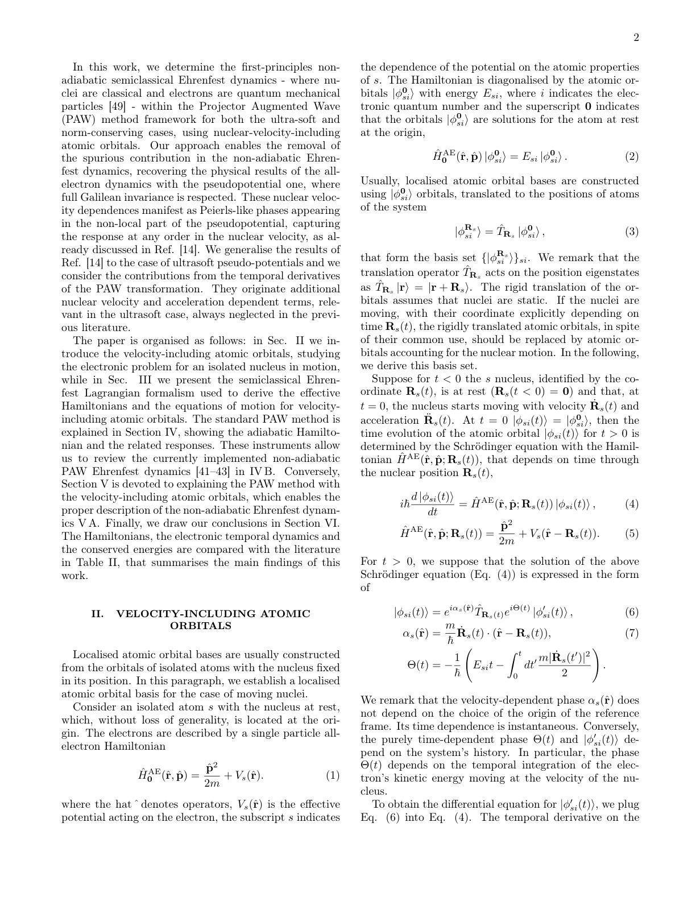
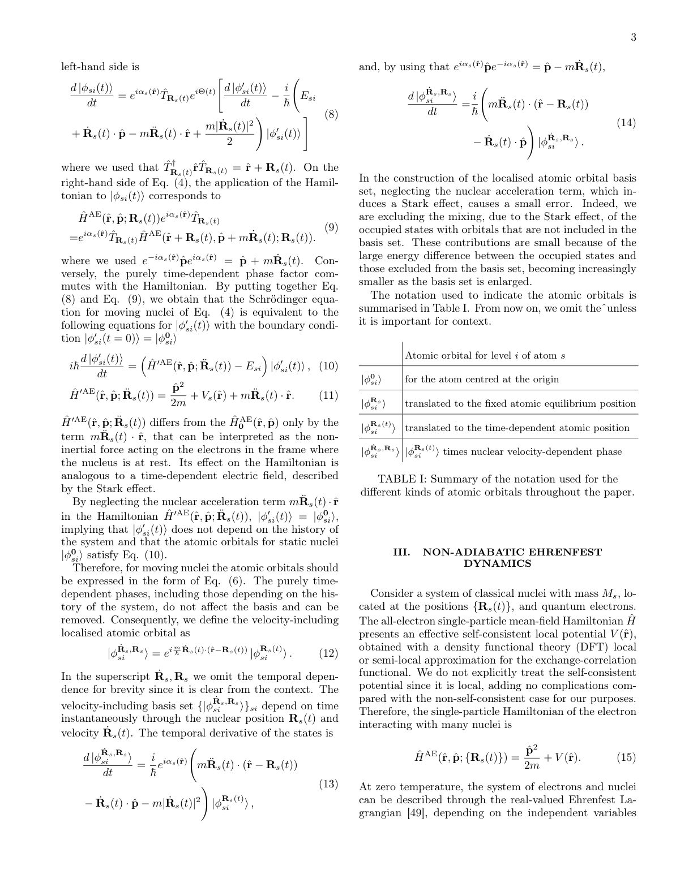
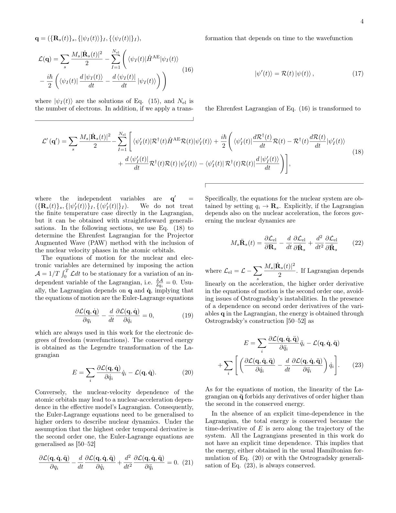
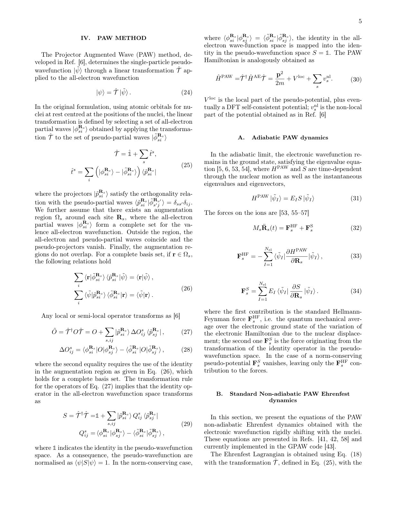
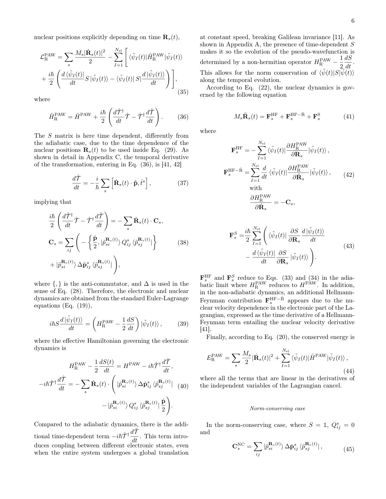
Summary. This paper develops an advanced theoretical formalism for non-adiabatic Ehrenfest dynamics using the Projector Augmented Wave method. It addresses a critical deficiency in standard calculations by rigorously incorporating terms dependent on the nuclei's velocity and acceleration into the electronic Hamiltonian. The resulting framework ensures physical consistency and Galilean invariance, leading to more accurate predictions of molecular dynamics.
Why it may be interesting. This work is highly relevant because it provides a rigorous theoretical framework for simulating complex molecular processes (like charge transfer or spectroscopy) where nuclear motion induces significant electronic structure changes, which is a core topic in AMO physics and quantum chemistry.
Main problem. The primary goal is deriving first-principles Ehrenfest molecular dynamics for non-adiabatic processes while correctly incorporating nuclear-velocity-dependent phases (electron-translation factors) into the atomic orbital basis.
Main result. Including these velocity-dependent phases ensures full Galilean invariance in pseudopotential calculations, removing spurious non-adiabatic couplings that arise from neglecting the nuclear velocity effects.
Method. The authors derive modified time evolution equations for localized atomic orbitals using a velocity-including basis within the Projector Augmented Wave (PAW) framework. They generalize standard Ehrenfest dynamics by incorporating terms dependent on nuclear velocity and acceleration into the effective Hamiltonian and Lagrangian.
Model / system. The model involves semiclassical Ehrenfest dynamics where nuclei are treated classically, and electrons quantum mechanically, using pseudo-potentials (norm-conserving and ultra-soft) within the PAW method. The system's evolution is governed by generalized Hamiltonians/Lagrangians that explicitly depend on nuclear position, velocity, and acceleration.
Key observables. Non-adiabatic coupling terms, conserved energy ($E_{ ext{PAW}}^{R, \dot{R}}$), forces governing nuclear motion ($\mathbf{F}_S$, $\mathbf{F}_{S-\dot{\mathbf{R}}}$, $\mathbf{F}_{S-\ddot{\mathbf{R}}}$).
Important parameters / regimes. Nuclear velocity ($\dot{\mathbf{R}}$) and acceleration ($\ddot{\mathbf{R}}$); the choice between norm-conserving and ultra-soft pseudo-potentials.
Assumptions / limitations. The derivation relies on specific mathematical transformations of the PAW operators to correctly account for time derivatives arising from nuclear motion, particularly in the velocity-including basis.
Figures summary. Not specified by notes; the structure implies comparisons between dynamics calculated with and without velocity corrections (e.g., Table II).
Paper structure. The paper builds logically by first identifying the failure of standard treatments due to neglected phases, then deriving the necessary transformations for the orbital basis ($\hat{T}_{\dot{R}}$), and finally constructing the fully corrected Hamiltonian and Lagrangian that govern the non-adiabatic dynamics.
We derive the first-principles Ehrenfest molecular dynamics describing non-adiabatic processes with the inclusion of the nuclear-velocity-dependent phases (also known as electron-translation factors) on the atomic-orbital basis. These phases, appearing when nuclei are treated dynamically, affect effective Hamiltonians constructed from localised orbitals. In this work, we focus on the effects in the first-principles pseudo-potential Hamiltonian, both for the norm-conserving and ultra-soft cases, derived within the Projector-Augmented-Wave (PAW) method framework. Peierls-like phases depending on the nuclear velocities appear in the non-local part of the potential, while additional nuclear velocity and acceleration-dependent corrections appear in the ultra-soft pseudo-potential case. The use of velocity-including atomic orbital basis enables a Galilean-invariant description of the non-adiabatic Ehrenfest molecular dynamics, removing spurious non-adiabatic couplings that arise from neglecting the nuclear velocity phases in the atomic orbitals.
Authors: T. A. M. Ragib Shahriar, Fumikazu Murakami, Xing He, Konnor Koons, Xinyan Li, Bumseop Kim, Shihan Qin, Varun Harbola, Jochen Mannhart, Yimo Han, Ruijuan Xu, Shengxi Huang, Andrew Rappe, Hanyu Zhu
Type: both · Category: strongly correlated electrons · PDF: https://arxiv.org/pdf/2606.06289v1
Analysis basis: full PDF text, analyzed in chunks
Topic relevance: interference shaping light 1/5
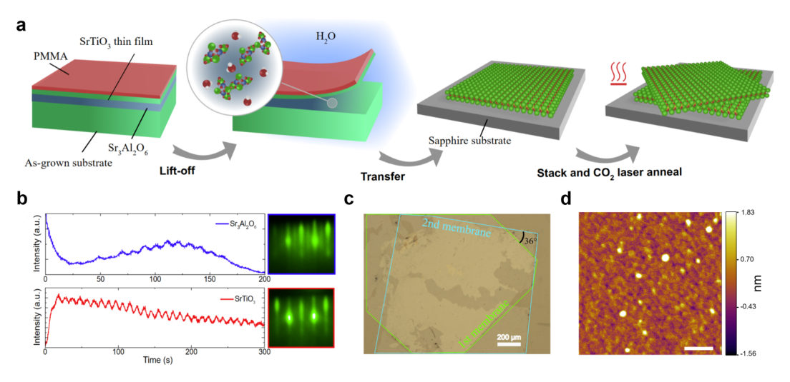
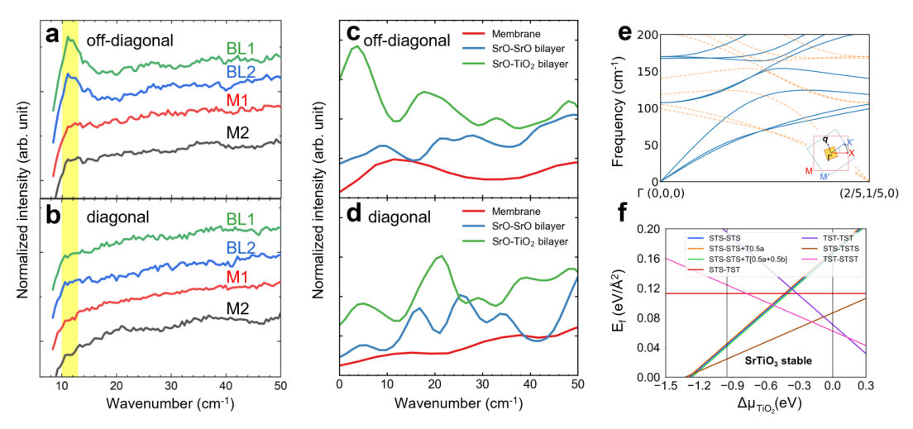
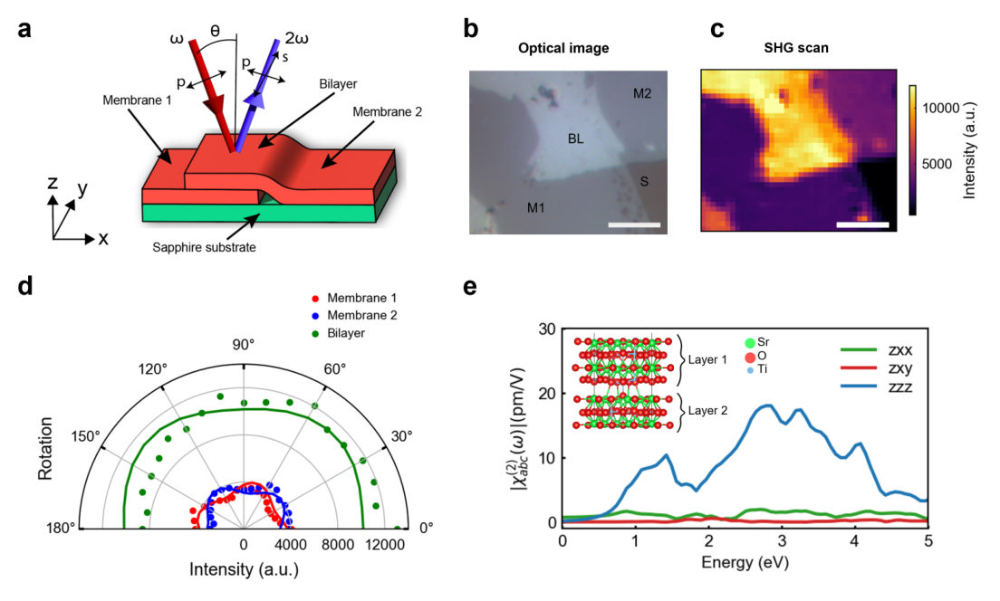
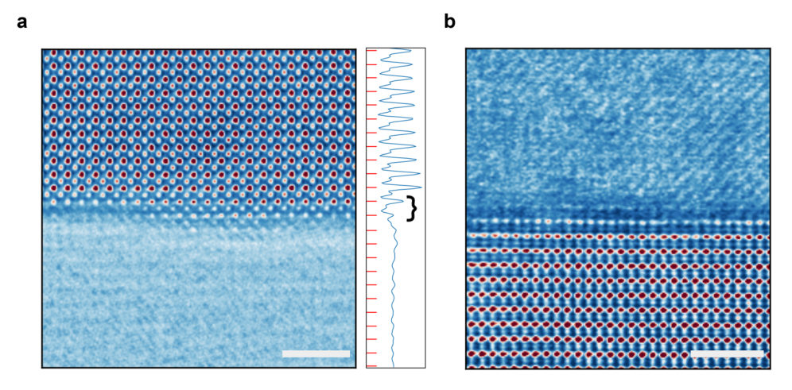
Summary. The research investigates moiré superlattices formed by twisting $ ext{SrTiO}_3$ membranes to control their electronic and optical properties. By combining SHG measurements with DFT calculations, the authors prove that asymmetric chemical bonding at the interface generates strong polarization and unique vibrational signatures. This work establishes a powerful methodology for designing correlated oxide materials via interfacial engineering.
Why it may be interesting. This work provides a direct experimental and theoretical pathway to engineer specific interfacial bonding motifs in oxide heterostructures, which is crucial for tuning correlated electron behavior and emergent quantum properties at interfaces.
Main problem. To understand the structural, electronic, and optical properties of moiré superlattices formed by twisted oxide membranes, particularly focusing on how interfacial bonding dictates symmetry breaking.
Main result. The study demonstrates that chemically bonded interfaces in twisted $ ext{SrTiO}_3$ exhibit strong nonlinear optical responses (SHG) and novel low-frequency vibrational modes due to asymmetric terminations ($ ext{SrO-TiO}_2$), even when the bulk material is cubic.
Method. A combination of advanced experimental techniques, including Raman scattering and Second-Harmonic Generation (SHG), was coupled with first-principles DFT calculations and ab initio molecular dynamics simulations.
Model / system. The physical system is a twisted $ ext{SrTiO}_3$ bilayer formed from freestanding membranes at specific twist angles (e.g., $36^\circ$), creating moiré superlattices with engineered interfaces like $ ext{SrO-TiO}_2$.
Key observables. Low-frequency Raman modes ($\sim 12 ext{ cm}^{-1}$), strong SHG signal enhancement, and calculated non-zero second-order susceptibility tensor components ($\chi^{(2)}$).
Important parameters / regimes. Twist angle ($36^\circ$), temperature (high-temperature annealing), and the specific nature of the interface termination ($ ext{SrO-TiO}_2$ vs. $ ext{SrO-SrO}$).
Assumptions / limitations. The observed phenomena are attributed to reconstruction driven by interfacial bonding polarity, rather than solely structural strain or lattice mismatch.
Figures summary. Figures illustrate the fabrication process (RHEED monitoring), Raman spectra showing novel low-frequency peaks, and SHG microscopy images confirming symmetry breaking in the bilayer region compared to single layers.
Paper structure. The paper systematically moves from fabricating the twisted membranes to characterizing their structure using STEM/AFM, then probing vibrational modes via Raman spectroscopy, and finally quantifying electronic polarization using angle-dependent SHG measurements, all supported by DFT calculations.
Moiré superlattices formed at the interfaces of mismatched lattices have attracted significant interest over the past decade due to their large tunability of band parameters and interactions among electrons, spins, and lattices. Superlattices made from twisted perovskite oxides may have strong structure and potential modulation, but evidence of such modulation over macroscopic areas, particularly at large twisting angles, has not been clearly demonstrated so far. Here, we fabricated millimeter-scale twisted oxide bilayers at $36^\circ$ angle, close to the simple coincidence site lattice condition $\Sigma5$, from freestanding SrTiO$_3$ membranes. We discovered new low-frequency vibrational modes whose Raman activity, according to molecular dynamics simulations, is greatly enhanced by an asymmetric, twisted interface between the SrO and TiO$_2$ layers. Such an interface is energetically favorable from first-principles calculations and is corroborated by the observation of strong second harmonic generation from the interface comparable to that from the SrTiO$_3$ surface throughout the bilayer region. The results are consistent with interlayer coupling enhanced by high-temperature annealing and confirmed by cross-sectional scanning transmission electron microscopy imaging. Our work sheds light on the structural behavior of twisted oxides and provides directions for tuning their phononic and nonlinear optical properties in future studies.
Authors: J. D. Kalow, J. T. Hinchen, G. Harris, E. Koukina, D. M. Harrington, P. C. McDaniel, N. J. Brennan, A. Golossanov, I. D. Spool D. Zajac, M. Mundt, S. Varner, M. Russell, S. Bull, K. McCormack, D. Mayer, L. E. Knaian, M. Khandaker, W. Stadolnik, W. R. Cutler, A. Sampat, K. Lau, J. Betances, C. Fagan, C. R. Shmayda, M. Koch, K. Payne, N. J. L. MacFadden, J. Simon, K. Peterson, A. Gami, S. Machavarapu, A. Tejeda, J. Katz, J. A. Allen, R. Chaney, K. Kem, I. Kiniti, E. Garcia Badaracco, K. R. Lynch, P. Gandhi, C. J. Johnstone, E. Niner, C. C. Petitjean, A. Antognini, W. T. Shmayda, S. O. Newburg, A. N. Knaian
Type: experiment · Category: other · PDF: https://arxiv.org/pdf/2606.05333v1
Analysis basis: full PDF text, analyzed in chunks
Topic relevance: non-equilibrium dynamics 1/5
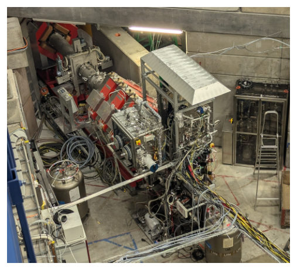
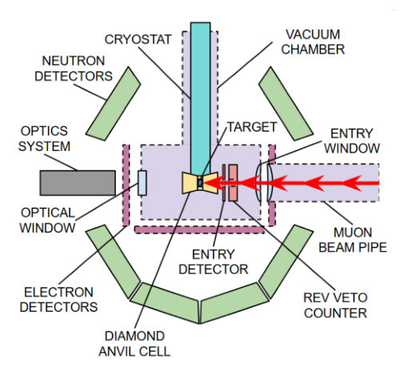
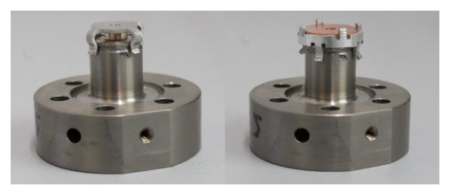
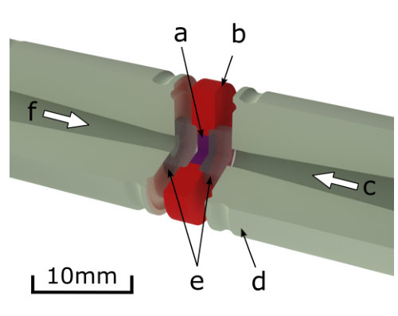
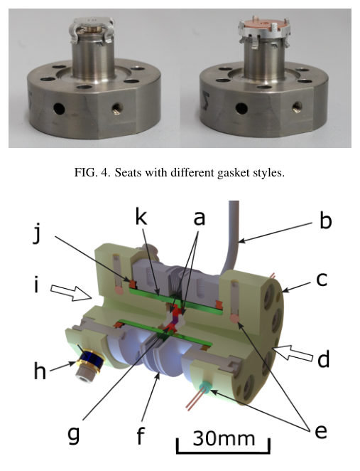
Summary. This paper details the development and successful operation of the MuFusE Large-Volume Diamond Anvil Cell, an apparatus designed to study muon-catalyzed fusion (μCF) under extreme pressures and temperatures. By achieving record high P-T benchmarks for d-t targets, the experiment advances fundamental research into low-energy nuclear reactions. The work highlights complex engineering solutions required to safely conduct measurements involving radioactive materials in highly confined sample volumes.
Why it may be interesting. While focused on nuclear/plasma physics, the extreme environment control (high P/T) and the use of advanced diagnostics within a confined sample volume present engineering challenges relevant to studying quantum matter under non-equilibrium conditions.
Main problem. The research aims to advance the study of Muon-catalyzed Fusion ($\mu$CF) by subjecting deuterium-tritium (d-t) mixtures to extreme conditions of high pressure and temperature.
Main result. A specialized large-volume Diamond Anvil Cell (DAC) was successfully developed, achieving benchmark conditions up to 933 MPa and 400 K for d-t targets, significantly exceeding previous experimental limits.
Method. The experiment utilizes the MuFusE DAC integrated with a high-intensity muon beam at PSI, allowing for in situ compression, heating, and diagnostic measurements of the fusion reaction products.
Model / system. The physical system is the MuFusE Large-Volume Diamond Anvil Cell (DAC), designed to compress and heat d-t gas mixtures. It incorporates advanced features like cryogenic loading, all-metal sealing, and remote pneumatic actuation for safe operation with tritium inventory.
Key observables. Fast neutrons, fast electrons, gamma rays, sample pressure (via laser spectroscopy/ruby fluorescence), and sample composition (via Raman spectroscopy).
Important parameters / regimes. Peak pressures up to 933 MPa; peak temperatures up to 400 K; target gas mixtures like d-t at liquid density.
Assumptions / limitations. The primary limitations noted include potential hydrogen permeation through the aluminum gasket at elevated temperatures and the need for large cell volumes relative to muon particle ranges.
Figures summary. Figures illustrate the assembled MuFusE setup, schematic representations of components (minichamber, anvils), and cross-sections detailing the complex assembly of the DAC system.
Paper structure. The paper details the development of the specialized DAC apparatus, describes its intricate mechanical and vacuum sealing systems, outlines the diagnostic techniques used for in situ measurement, and reports on achieving record high P-T conditions for $\mu$CF studies.
A new large-volume diamond anvil cell (DAC) has been developed for the Muon-catalyzed Fusion ($μ$CF) Experiment (MuFusE), enabling the compression and heating of deuterium-tritium (d-t) mixtures to pressures and temperatures needed to advance $μ$CF research. The MuFusE DAC achieves the large sample volumes necessary for high-precision fusion measurements while integrating cryogenic loading, all-metal sealing, and flexible bellows to maintain a secure environment during cell compression. Combined with remote pneumatic actuation and secondary containment, the DAC safely managed a 25 Ci tritium inventory while providing a clear optical path for in situ measurements of sample pressure and composition via laser spectroscopy. Utilizing 5 mm diameter diamond anvils oriented in the path of a high-intensity muon beam, the apparatus achieved a stable sample volume of 19.2 mm$^3$ at liquid density, pressures up to 933 MPa and temperatures up to 400 K - benchmarks that significantly exceed previously reported limits for static d-t targets.